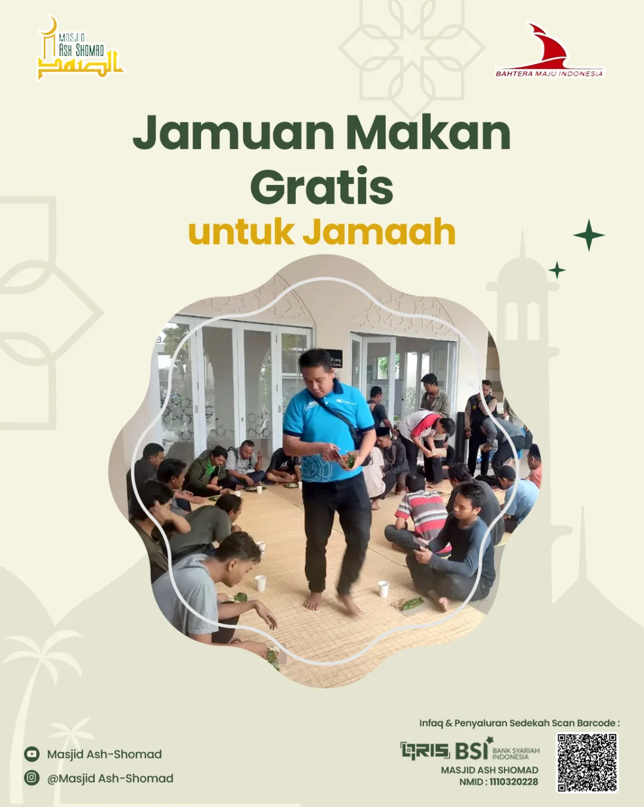
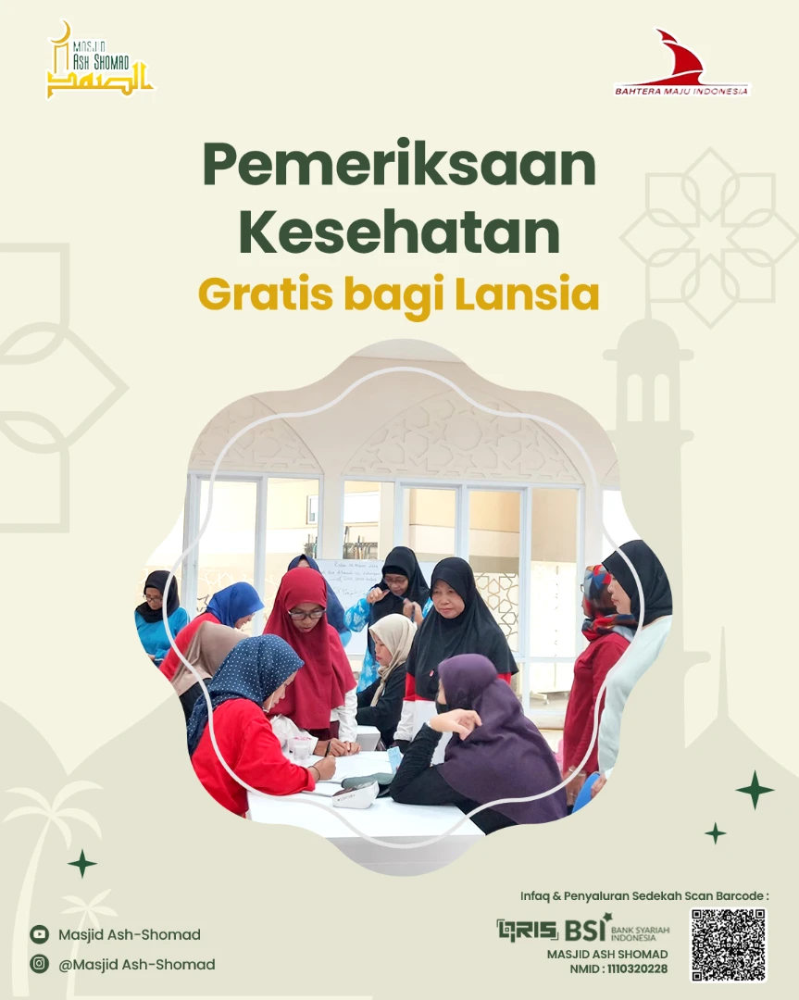

Galeri Kegiatan
Momen Bersama Jamaah
Dokumentasi kegiatan dan aktivitas Masjid Ash-Shomad bersama jamaah.

Program SosialProgram Makan Gratis
Santunan dan program makan gratis untuk masyarakat sekitar masjid.
 Anak Asuh
Anak Asuh
Program Anak Asuh
Pembinaan dan beasiswa untuk anak yatim dan dhuafa di sekitar masjid.

KesehatanLayanan Kesehatan Gratis
Pemeriksaan dan layanan kesehatan gratis untuk jamaah dan masyarakat umum.
 Revitalisasi
Revitalisasi
Revitalisasi Masjid
Program pengembangan dan renovasi sarana prasarana masjid.
 Santunan
Santunan
Santunan Yatim & Dhuafa
Santunan rutin untuk anak yatim dan keluarga kurang mampu di sekitar masjid.